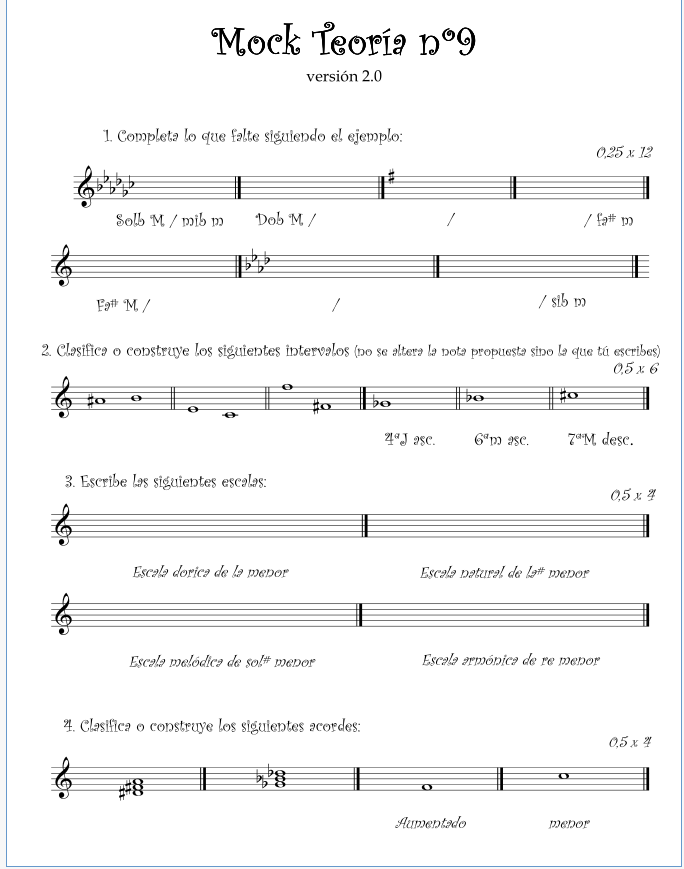

Semana 19 Curso 2022/2023
Profesora Pilar Ariño
Homework dated 17 Febrero 2023
Table of Contents
Hola bich@s, este fin de semana os mando dos correos este correo os digo las tareas a trabajar y en el segundo envío correo las partituras de 'Danza Al Sol'. Os recuerdo trabajar con cabeza, tenéis que estudiar de pie, llevando el dibujo del compás, excepto aquellos que tengan problemas serios y ya hemos comentado en clase. Cuando estudiéis, intentar hacerlo con una emisión buena de voz, acostumbraros a que la gente os escuche. Las tareas de este fin de semana:
1º Repasar las melodías 20 y 21 del libro para cantar 4º (podéis encontrar el audio del acompañamiento de piano en el aula virtual). Intentar cantar la melodía con efectos sonoros para colocar la voz Brr, Ñe, Ña, Ma….
2º Repasar los ritmos 6, 7 y 8 de Ritmo. Acceso a 1º de profesional.. Recordar hacerlo como hicimos en clase, primero dibujar el compás y ver los diferentes cambios de compás según el pulso, luego lo leéis con onomatopeyas y por último con notas, la duración de este trabajo tiene que ser entre 2 minutos y medio y 3 minutos. Solamente quiero que incidáis en los ritmos que os cueste. (mando en este email el pdf). Repasar las lecciones que hemos estudiado.
3º Realizar el modelo nº 9 de los 50 modelos de teoría, acostumbraros a realizar el círculo de 5ªs cada vez que hagáis uno de los modelos .
{kind=link}
4º Realizar los dictados 23 y 24 del aula virtual. (os mando una foto con las soluciones de los dictados (19,20,21 y 22) de la anterior semana)
5º Cantar las melodías nº 7, 8, 9, 10, 11 y 12 a primera vista, tienes en el aula virtual un acompañamiento de piano para que te sea más fácil.
Por último os mando este enlace de youtube espero que os guste https://youtu.be/vXuUPcfloQs ( es un video muy largo, verlo poco a poco).
— Extra, en e-mails posteriores se adjunta las partituras y tutorial de la 'Danza del Sol', voz 11 para el grupo Hugo y Alexia.
(Libro) Para Cantar, Vol 4
melodía 20
melodía 21
Ritmo
6
Figure 1: Ritmo, 6
7
Figure 2: Ritmo, 7
8
Figure 3: Ritmo, 8
Modelo de Teoría
Para una versión pdf de esta vista y poder imprimir usar este link (hacer download e imprimir)

Figure 4: Ejercicio, resolver Mock 9
Dictados
- Nota En la carpeta Dictados de Aula Virtual no aparece los audios de dictado 24 (tampoco el 25 y 26) como se prueba en la screen adjunta:
Dictado 23, 24
Dictado 23
Solución al dictado Nº 19,20,21,22 semana anterior (week, 18)
Melodías Para Cantar a Primera Vista
Melodía 7 y 8
Melodía 9 y 10
Danza al Sol
Grupo Hugo y Alexia, Voz 11
Figure 5: Danza Del Sol, voz 11, página 1
Figure 6: Danza Del Sol, voz 11, página 2
Figure 7: Danza Del Sol, voz 11, página 3